查看最新版本：原有人物、天色过渡、街边购物与开始工作修复 →
统一轻线条、实色纸面、文字层级和操作状态，保留不同物件自己的形状。下面的界面均来自运行中的游戏；点击图片查看原尺寸。
让海岸插画成为主体，主要入口集中排列。
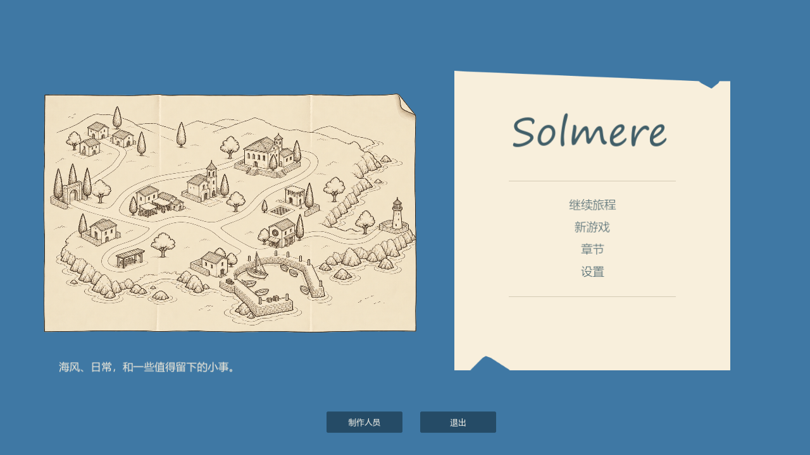
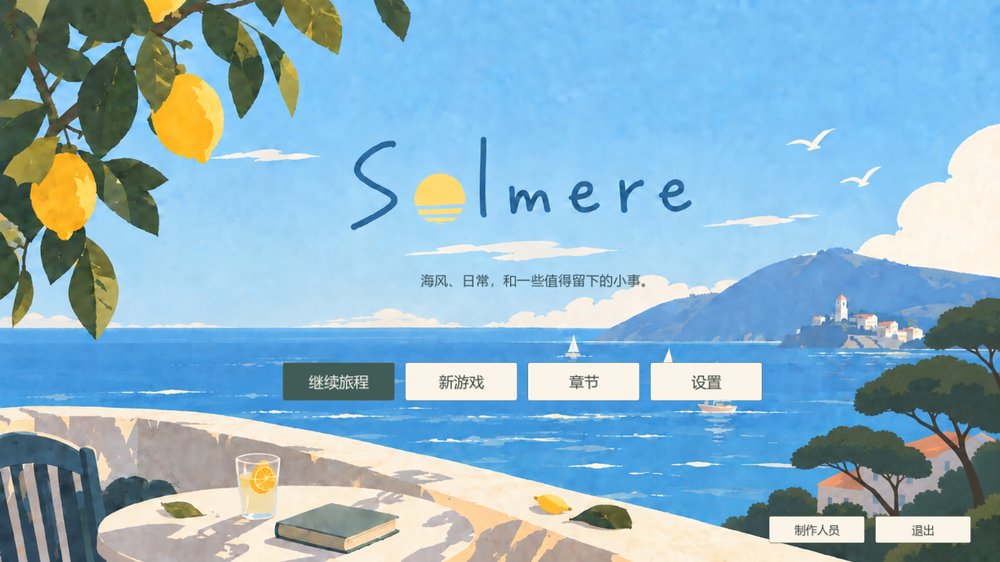
减轻书页边线，让纸面、标题和正文有呼吸空间。
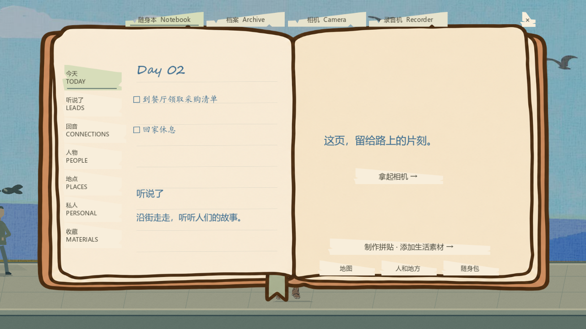
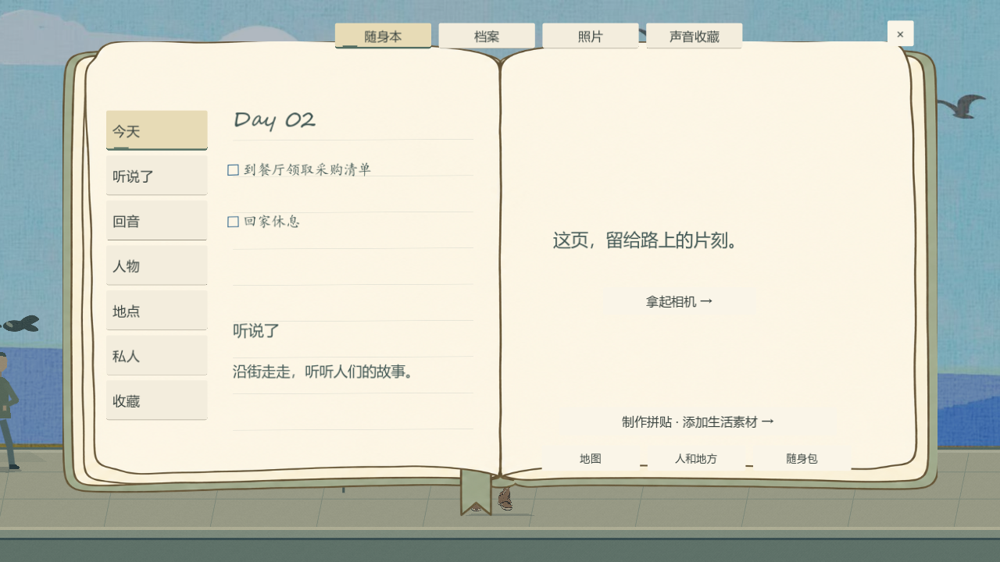
自由拼贴成为明确入口，其余内容使用索引。
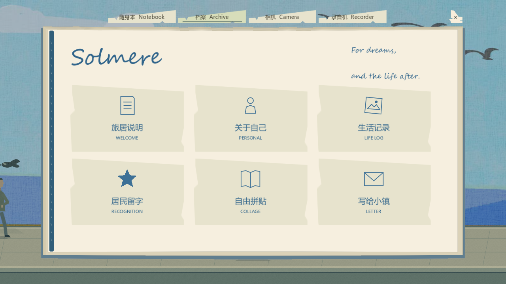
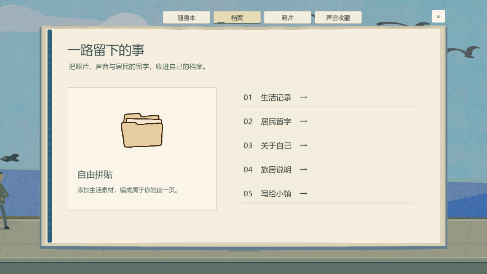
把实时画面、录制、增益和计时放入手提设备。
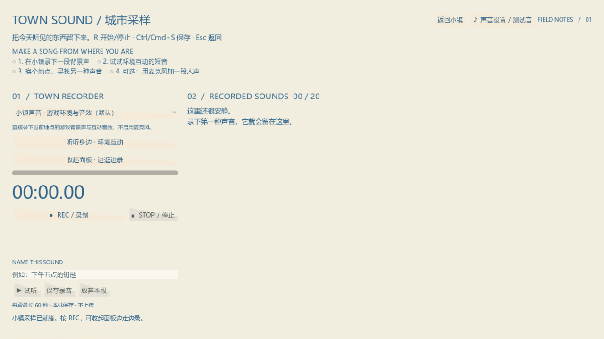
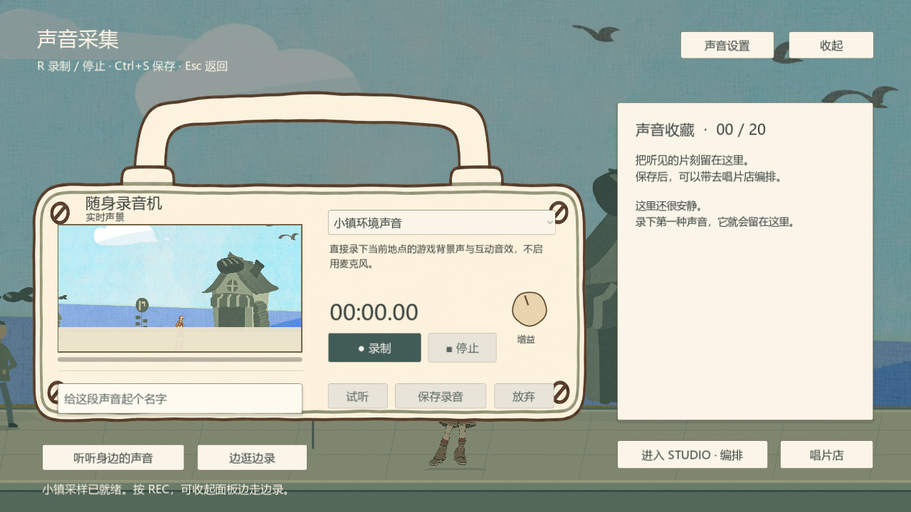
提高文字可读性，常用操作与编辑操作分开。
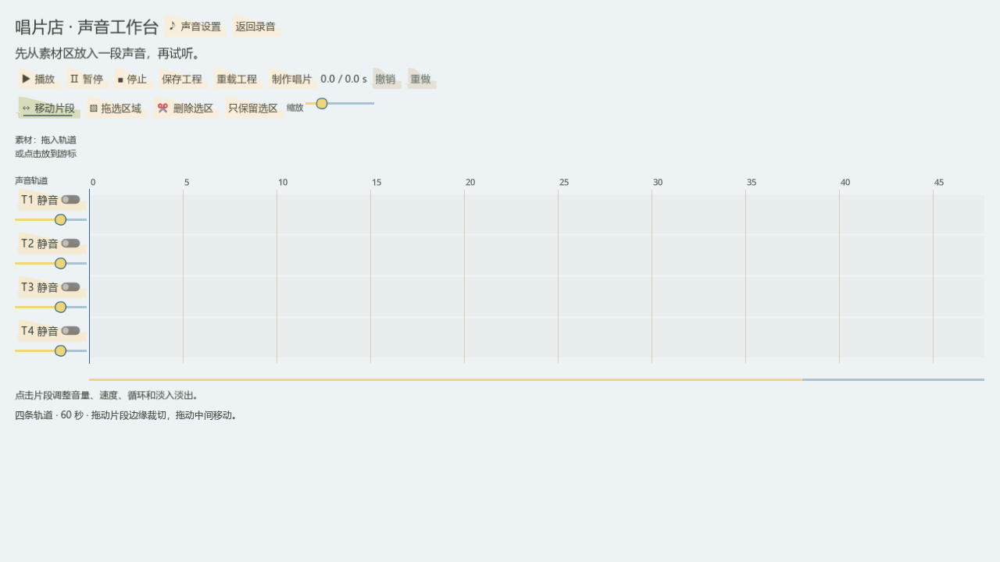
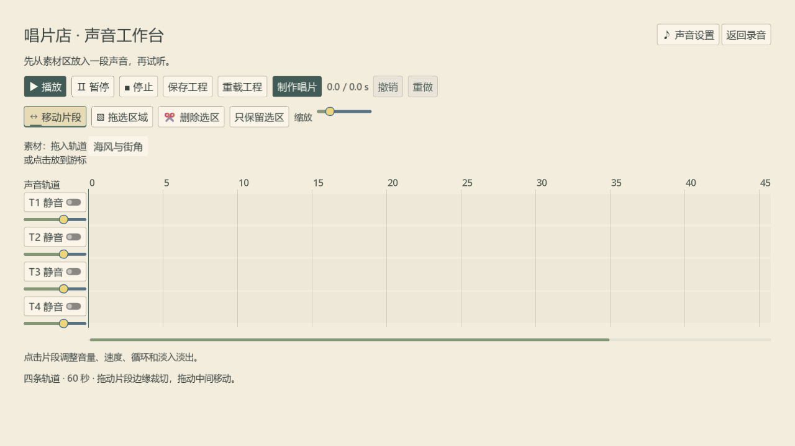
原有绘制和保存功能保留，装饰不压住书写区域。
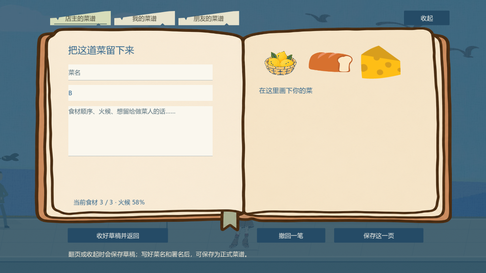
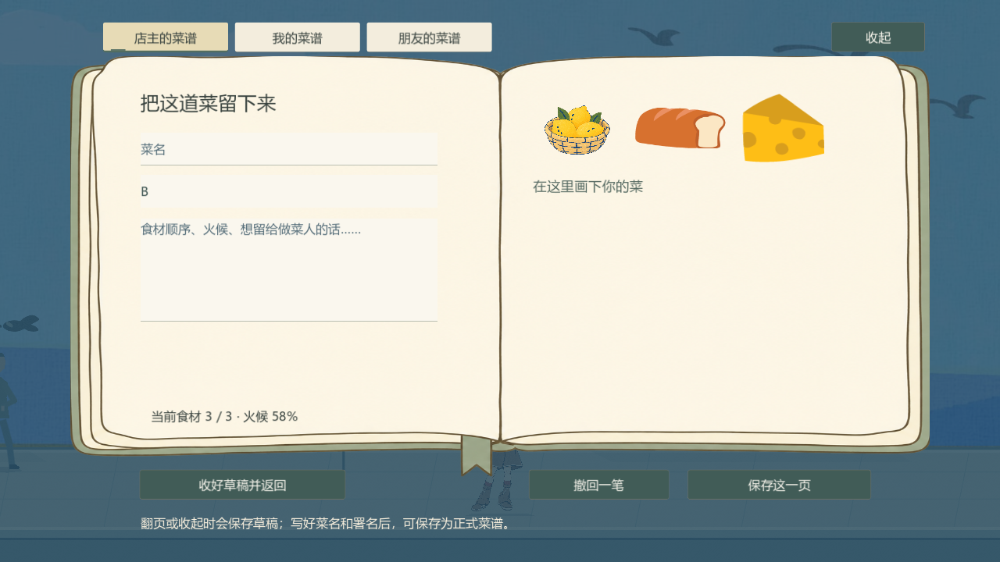
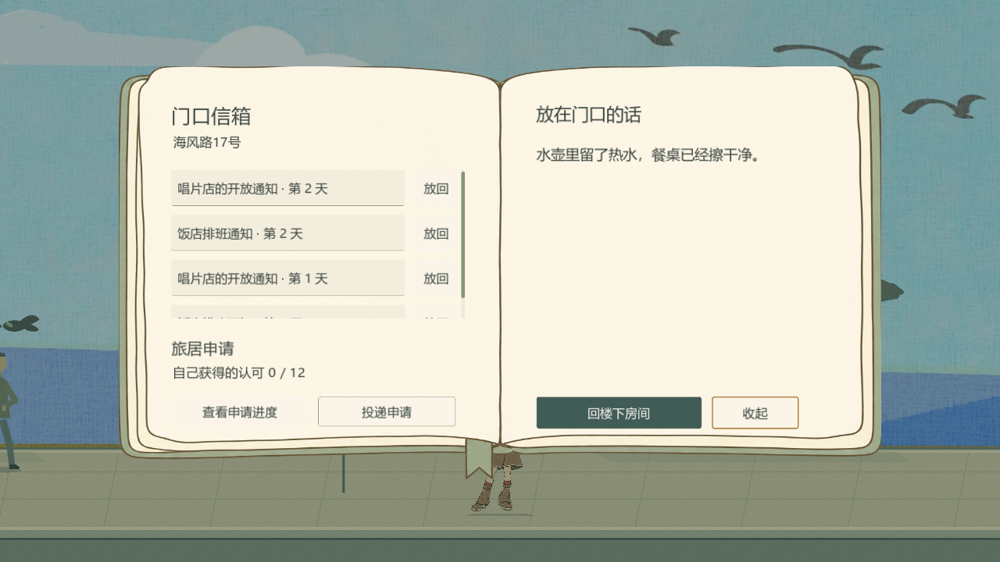
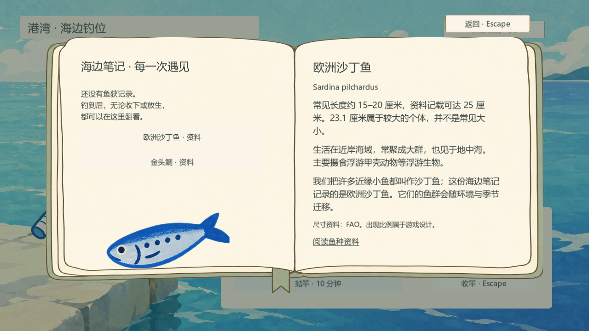
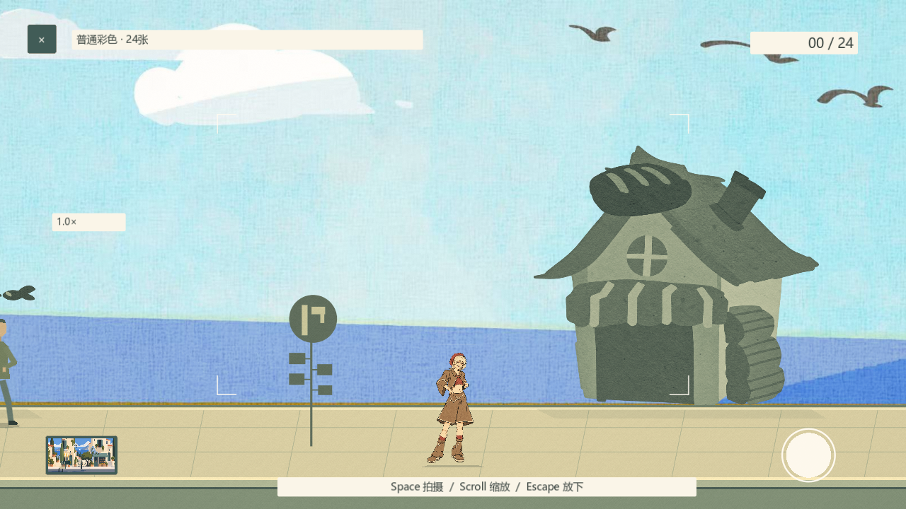
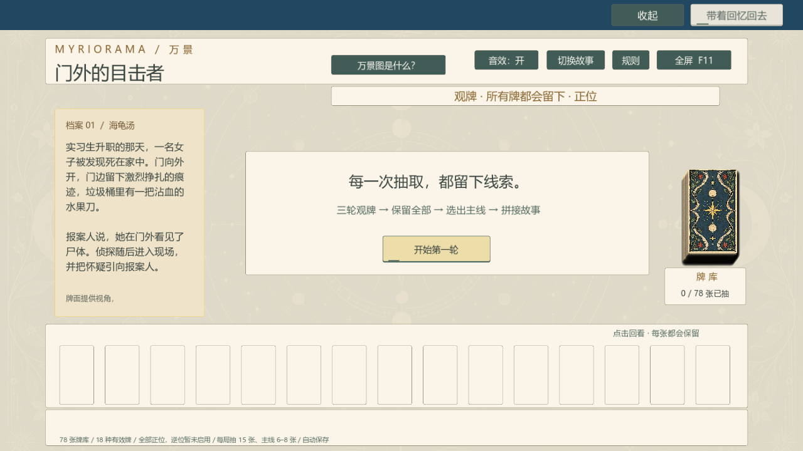
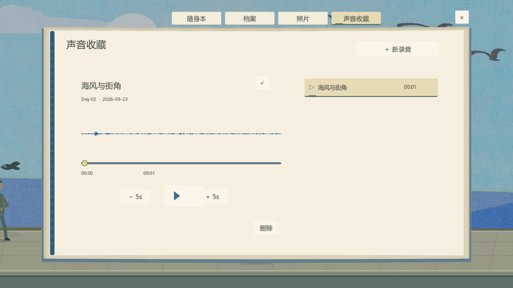
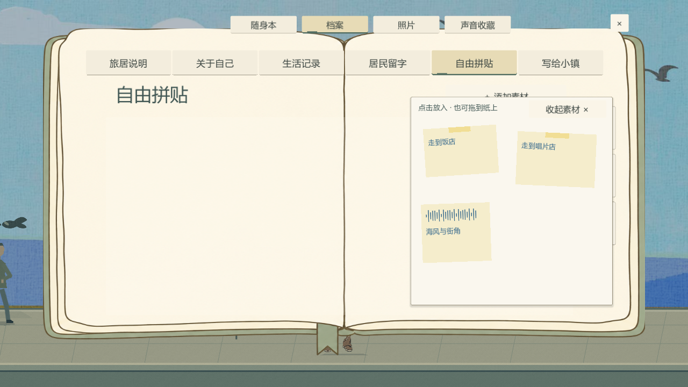